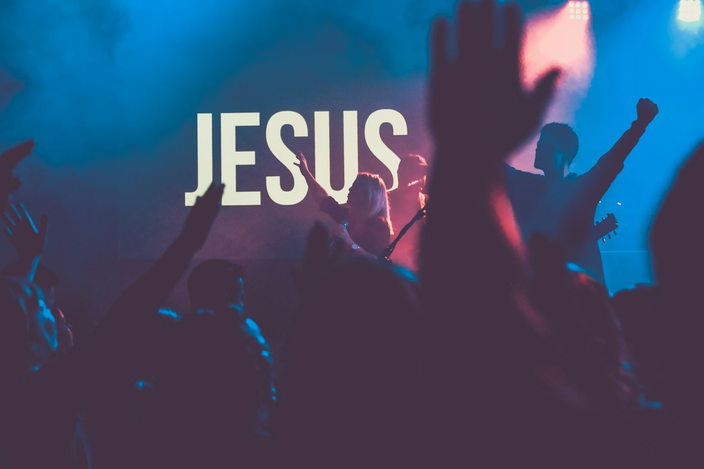

Ave Maria, cheia de graça
Bem-vindo à Casa da Mãe de Deus
Um lugar de oração, acolhida e encontro com Cristo pelas mãos de Maria. Venha rezar conosco — as portas do Santuário estão sempre abertas para você e sua família.

13
Todo dia 13 celebramos a memória das aparições de Fátima.
Nossa história
Um santuário de fé, esperança e acolhida
Inspirado na mensagem que Nossa Senhora confiou aos três pastorinhos em Fátima, em 1917, nosso Santuário é um lugar de oração, conversão e paz. Aqui, peregrinos de todas as idades encontram os sacramentos, a devoção do Santo Rosário e uma comunidade viva e acolhedora.
- Missas por semana
- 18
- Pastorais ativas
- 25+
- Famílias assistidas
- 300
Programação
Próximos eventos e celebrações
Participe das missas, novenas e festividades do Santuário. Todos são bem-vindos!
Horários de Missa
Confissões: terça a sexta, das 14h às 17h, ou mediante agendamento na secretaria.
Segunda a Sexta
- 07h00
- 12h00
- 19h30
Sábado
- 08h00
- 17h00
- 19h00
Domingo
- 07h00
- 09h00
- 11h00
- 17h00
- 19h00
Todo dia 13: Missa solene às 19h30 seguida de procissão luminosa com a imagem de Nossa Senhora.
PASCOM
Pastoral da Comunicação
Notícias, recados paroquiais e os momentos mais bonitos da nossa comunidade.
Galeria da Comunidade
Ofertório e Contribuições
Sua generosidade sustenta esta casa
"Cada um dê conforme decidiu em seu coração, não com tristeza nem por obrigação, pois Deus ama quem dá com alegria." (2Cor 9,7)
45%
Manutenção do Santuário
Energia, água, conservação do templo e liturgia.
35%
Obras sociais
Cestas básicas, apoio a famílias e pastoral da saúde.
20%
Evangelização
Catequese, formação e comunicação (PASCOM).
Doação via PIX
Chave PIX (CNPJ)
00.000.000/0001-00
Favorecido: Santuário Nossa Senhora de Fátima
* QR Code e chave meramente ilustrativos. Substitua pelos dados oficiais.
Transferência bancária
- Banco
- Banco Exemplo (000)
- Agência
- 0000
- Conta corrente
- 00000-0
- CNPJ
- 00.000.000/0001-00
- Titular
- Mitra / Santuário N. S. de Fátima
Deseja se tornar dizimista? Procure a secretaria paroquial e faça seu cadastro. A transparência é um compromisso: a prestação de contas é afixada mensalmente no mural do Santuário.